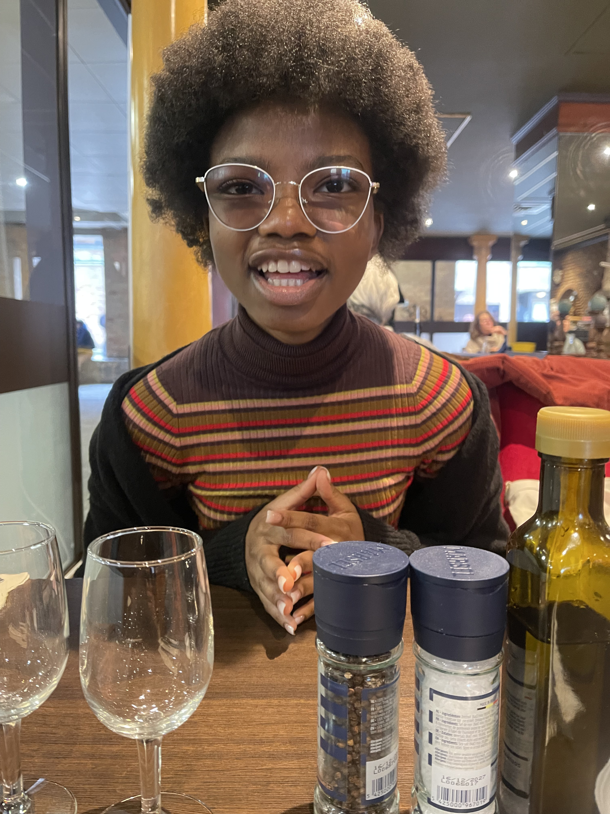
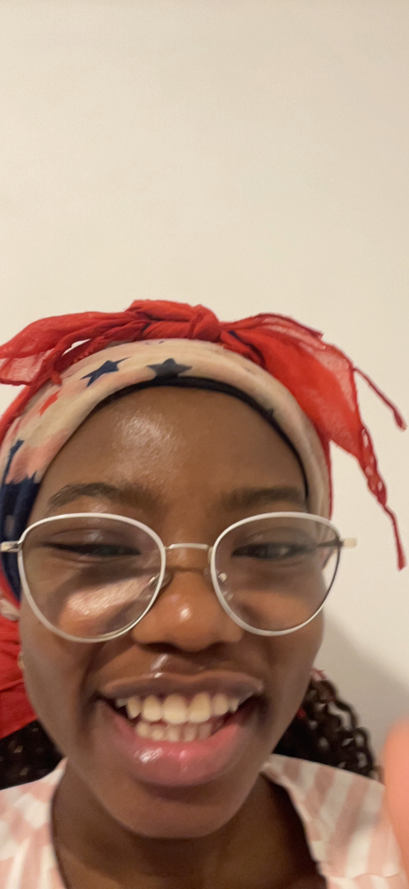
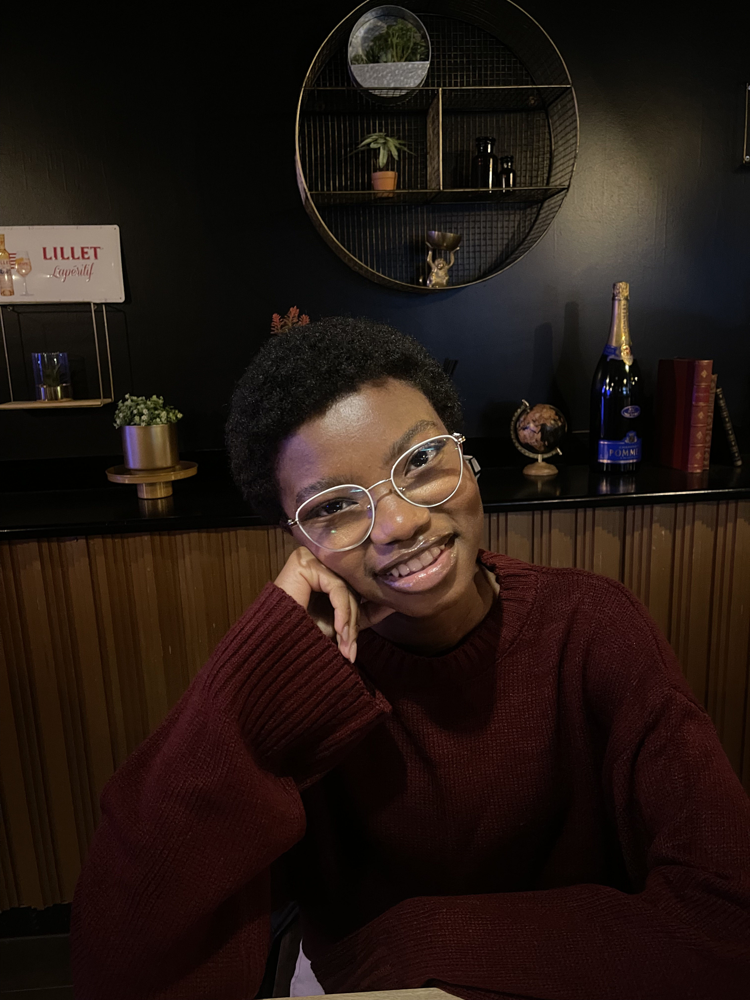
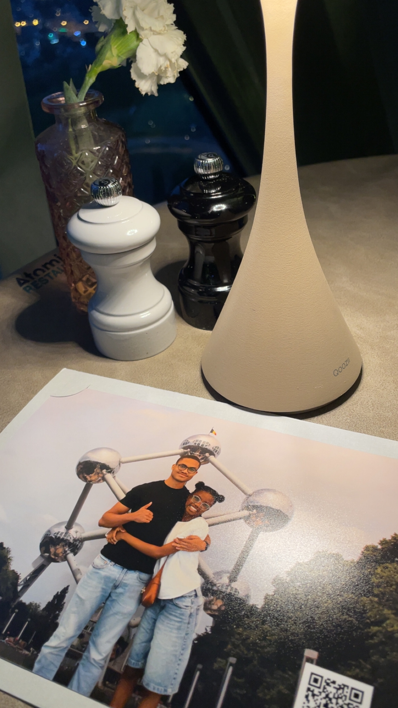

Et puis il y a tous ces souvenirs qui rendent cette année si belle.
Nos moments d'amour, nos fous rires, cette connexion évidente entre nous.
Ces journées simples mais parfaites, à enchaîner un pop the balloon, trop de nourriture, un film, et des éclats de rire entre chaque instant.
Ces appels longs et doux où le temps s'arrête.
Ces nuits de FaceTime interminables, juste pour rester encore un peu ensemble.
Tout ça, c'est nous. Et c'est précieux.





